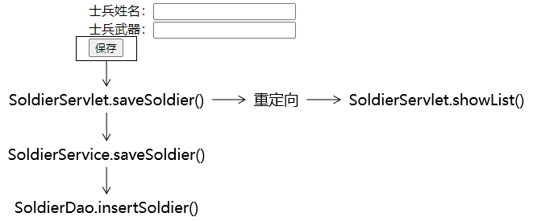

加餐 最凝练的CRUD1、建模①物理建模②逻辑建模2、总体架构3、搭建持久化层所需环境①导入jar包②创建jdbc.properties③创建JDBCUtils工具类④BaseDao4、搭建表述层所需环境①导入jar包②创建ViewBaseServlet③配置web.xml④创建view目录5、功能清单6、显示首页①目标②思路③代码[1]创建PortalServlet[2]创建portal.html7、显示列表①目标②思路③代码[1]ModelBaseServlet[2]SoldierDao.selectSoldierList()[3]SoldierService.getSoldierList()[4]SoldierServlet.showList()8、删除功能①目标②思路[1]先不考虑后续[2]加上后续返回响应页面③代码[1]完成删除超链接[2]Servlet方法[3]Service方法[4]Dao方法9、前往新增信息的表单页面①创建超链接②Servlet③创建表单页面10、执行保存①目标②思路③代码[1]Servlet方法[2]Service方法[3]Dao方法11、前往修改信息的表单页面①创建超链接②Servlet方法③Service方法④Dao方法⑤表单页面12、执行更新①Servlet方法②Service方法③Dao方法13、请求字符集设置
加餐 最凝练的CRUD
1、建模
①物理建模
CREATE DATABASE `view-demo`CHARACTER SET utf8;USE `view-demo`;CREATE TABLE t_soldier( soldier_id INT PRIMARY KEY AUTO_INCREMENT, soldier_name CHAR(100), soldier_weapon CHAR(100));②逻辑建模
xxxxxxxxxxpublic class Soldier { private Integer soldierId; private String soldierName; private String soldierWeapon;2、总体架构
3、搭建持久化层所需环境
①导入jar包
commons-dbutils-1.6.jar druid-1.1.9.jar hamcrest-core-1.3.jar junit-4.12.jar mysql-connector-java-5.1.37-bin.jar
②创建jdbc.properties
维护基本连接信息
xxxxxxxxxxdriverClassName=com.mysql.jdbc.Driverurl=jdbc:mysql://192.168.198.100:3306/view-demousername=rootpassword=atguiguinitialSize=10maxActive=20maxWait=10000③创建JDBCUtils工具类
ximport com.alibaba.druid.pool.DruidDataSourceFactory;import javax.sql.DataSource;import java.io.InputStream;import java.sql.Connection;import java.sql.SQLException;import java.util.Properties;public class JDBCUtil { // 将数据源对象设置为静态属性，保证大对象的单一实例 private static DataSource dataSource; static { // 1.创建一个用于存储外部属性文件信息的Properties对象 Properties properties = new Properties(); // 2.使用当前类的类加载器加载外部属性文件：jdbc.properties InputStream inputStream = JDBCUtil.class.getClassLoader().getResourceAsStream("jdbc.properties"); try { // 3.将外部属性文件jdbc.properties中的数据加载到properties对象中 properties.load(inputStream); // 4.创建数据源对象 dataSource = DruidDataSourceFactory.createDataSource(properties); } catch (Exception e) { e.printStackTrace(); } } /** * 从数据源中获取数据库连接 * @return 数据库连接对象 */ public static Connection getConnection() { Connection connection = null; try { connection = dataSource.getConnection(); } catch (SQLException e) { e.printStackTrace(); throw new RuntimeException(e); } return connection; } /** * 释放数据库连接 * @param connection 要执行释放操作的连接对象 */ public static void releaseConnection(Connection connection) { if (connection != null) { try { connection.close(); } catch (SQLException e) { e.printStackTrace(); throw new RuntimeException(e); } } } }测试能否正常连接数据库：
xxxxxxxxxxpublic class DemoTest { public void testConnection() { Connection connection = JDBCUtil.getConnection(); System.out.println("connection = " + connection); }}④BaseDao
xxxxxxxxxxpublic class BaseDao<T> { private QueryRunner queryRunner = new QueryRunner(); /** * 通用的增删改方法 * @param sql * @param param * @return */ public int update(String sql, Object ... param) { Connection connection = JDBCUtil.getConnection(); int count = 0; try { count = queryRunner.update(connection, sql, param); } catch (SQLException e) { e.printStackTrace(); throw new RuntimeException(e); } finally { // 关闭数据库连接 JDBCUtil.releaseConnection(connection); } return count; } /** * 查询单个对象的通用方法 * @param clazz * @param sql * @param param * @return */ public T getBean(Class<T> clazz, String sql, Object ... param) { Connection connection = JDBCUtil.getConnection(); T bean = null; try { bean = queryRunner.query(connection, sql, new BeanHandler<>(clazz), param); } catch (SQLException e) { e.printStackTrace(); throw new RuntimeException(e); } finally { // 关闭数据库连接 JDBCUtil.releaseConnection(connection); } return bean; } /** * 查询集合对象的通用方法 * @param clazz * @param sql * @param param * @return */ public List<T> getBeanList(Class<T> clazz, String sql, Object ... param) { Connection connection = JDBCUtil.getConnection(); List<T> beanList = null; try { beanList = queryRunner.query(connection, sql, new BeanListHandler<>(clazz), param); } catch (SQLException e) { e.printStackTrace(); throw new RuntimeException(e); } finally { // 关闭数据库连接 JDBCUtil.releaseConnection(connection); } return beanList; }}4、搭建表述层所需环境
本质上就是Thymeleaf所需要的环境
①导入jar包
attoparser-2.0.5.RELEASE.jar javassist-3.20.0-GA.jar log4j-1.2.15.jar ognl-3.1.26.jar slf4j-api-1.7.25.jar slf4j-log4j12-1.7.25.jar thymeleaf-3.0.12.RELEASE.jar unbescape-1.1.6.RELEASE.jar
②创建ViewBaseServlet
xxxxxxxxxximport org.thymeleaf.TemplateEngine;import org.thymeleaf.context.WebContext;import org.thymeleaf.templatemode.TemplateMode;import org.thymeleaf.templateresolver.ServletContextTemplateResolver;import javax.servlet.ServletContext;import javax.servlet.ServletException;import javax.servlet.http.HttpServlet;import javax.servlet.http.HttpServletRequest;import javax.servlet.http.HttpServletResponse;import java.io.IOException;public class ViewBaseServlet extends HttpServlet { private TemplateEngine templateEngine; public void init() throws ServletException { // 1.获取ServletContext对象 ServletContext servletContext = this.getServletContext(); // 2.创建Thymeleaf解析器对象 ServletContextTemplateResolver templateResolver = new ServletContextTemplateResolver(servletContext); // 3.给解析器对象设置参数 // ①HTML是默认模式，明确设置是为了代码更容易理解 templateResolver.setTemplateMode(TemplateMode.HTML); // ②设置前缀 String viewPrefix = servletContext.getInitParameter("view-prefix"); templateResolver.setPrefix(viewPrefix); // ③设置后缀 String viewSuffix = servletContext.getInitParameter("view-suffix"); templateResolver.setSuffix(viewSuffix); // ④设置缓存过期时间（毫秒） templateResolver.setCacheTTLMs(60000L); // ⑤设置是否缓存 templateResolver.setCacheable(true); // ⑥设置服务器端编码方式 templateResolver.setCharacterEncoding("utf-8"); // 4.创建模板引擎对象 templateEngine = new TemplateEngine(); // 5.给模板引擎对象设置模板解析器 templateEngine.setTemplateResolver(templateResolver); } protected void processTemplate(String templateName, HttpServletRequest req, HttpServletResponse resp) throws IOException { // 1.设置响应体内容类型和字符集 resp.setContentType("text/html;charset=UTF-8"); // 2.创建WebContext对象 WebContext webContext = new WebContext(req, resp, getServletContext()); // 3.处理模板数据 templateEngine.process(templateName, webContext, resp.getWriter()); }}③配置web.xml
xxxxxxxxxx<!-- 在上下文参数中配置视图前缀和视图后缀 --><context-param> <param-name>view-prefix</param-name> <param-value>/WEB-INF/view/</param-value></context-param><context-param> <param-name>view-suffix</param-name> <param-value>.html</param-value></context-param>④创建view目录
5、功能清单
显示首页：浏览器通过index.html访问首页Servlet，然后再解析对应的模板视图
显示列表：在首页点击超链接，跳转到目标页面把所有士兵的信息列表显示出来
删除信息：在列表上点击删除超链接，执行信息的删除操作
新增信息：
- 在列表页面点击超链接跳转到新增士兵信息的表单页面
- 在新增信息的表单页面点击提交按钮执行保存
更新信息：
- 在列表上点击更新超链接，跳转到更新士兵信息的表单页面：表单回显
- 在更新信息的表单页面点击提交按钮执行更新
6、显示首页
①目标
浏览器访问index.html，通过首页Servlet，渲染视图，显示首页。
②思路

③代码
[1]创建PortalServlet
xxxxxxxxxx<servlet> <servlet-name>PortalServlet</servlet-name> <servlet-class>com.atguigu.demo.servlet.PortalServlet</servlet-class></servlet><servlet-mapping> <servlet-name>PortalServlet</servlet-name> <url-pattern>/index.html</url-pattern></servlet-mapping>Servlet代码：
xxxxxxxxxxpublic class PortalServlet extends ViewBaseServlet { protected void doGet(HttpServletRequest request, HttpServletResponse response) throws ServletException, IOException { String viewName = "portal"; super.processTemplate(viewName, request, response); } protected void doPost(HttpServletRequest request, HttpServletResponse response) throws ServletException, IOException { }}[2]创建portal.html
xxxxxxxxxx<html lang="en" xmlns:th="http://www.thymeleaf.org"><head> <meta charset="UTF-8"> <title>士兵信息管理系统</title></head><body> <a th:href="@{/SoldierServlet?method=showList}">显示士兵信息列表</a></body></html>7、显示列表
①目标
在目标页面显示所有士兵信息，士兵信息是从数据库查询出来的
②思路

③代码
[1]ModelBaseServlet
创建这个基类的原因是：我们希望每一个模块能够对应同一个Servlet，这个模块所需要调用的所有方法都集中在同一个Servlet中。如果没有这个ModelBaseServlet基类，我们doGet()、doPost()方法可以用来处理请求，这样一来，每一个方法都需要专门创建一个Servlet（就好比咱们之前的LoginServlet、RegisterServlet其实都应该合并为UserServlet）。
xxxxxxxxxxpublic class ModelBaseServlet extends ViewBaseServlet { protected void doGet(HttpServletRequest request, HttpServletResponse response) throws ServletException, IOException { // 在doGet()方法中调用doPost()方法，这样就可以在doPost()方法中集中处理所有请求 doPost(request, response); } protected void doPost(HttpServletRequest request, HttpServletResponse response) throws ServletException, IOException { // 1.从请求参数中获取method对应的数据 String method = request.getParameter("method"); // 2.通过反射调用method对应的方法 // ①获取Class对象 Class<? extends ModelBaseServlet> clazz = this.getClass(); try { // ②获取method对应的Method对象 Method methodObject = clazz.getDeclaredMethod(method, HttpServletRequest.class, HttpServletResponse.class); // ③打开访问权限 methodObject.setAccessible(true); // ④通过Method对象调用目标方法 methodObject.invoke(this, request, response); } catch (Exception e) { e.printStackTrace(); throw new RuntimeException(e); } }}[2]SoldierDao.selectSoldierList()


接口方法：
xxxxxxxxxxpublic interface SoldierDao { List<Soldier> selectSoldierList();}实现类方法：
xxxxxxxxxxpublic class SoldierDaoImpl extends BaseDao<Soldier> implements SoldierDao { public List<Soldier> selectSoldierList() { String sql = "select soldier_id soldierId,soldier_name soldierName,soldier_weapon soldierWeapon from t_soldier"; return getBeanList(Soldier.class, sql); }}[3]SoldierService.getSoldierList()

接口方法：
xxxxxxxxxxpublic interface SoldierService { List<Soldier> getSoldierList();}实现类方法：
xxxxxxxxxxpublic class SoldierServiceImpl implements SoldierService { private SoldierDao soldierDao = new SoldierDaoImpl(); public List<Soldier> getSoldierList() { List<Soldier> soldierList = soldierDao.selectSoldierList(); return soldierList; }}[4]SoldierServlet.showList()
xxxxxxxxxxprotected void showList(HttpServletRequest request, HttpServletResponse response) throws ServletException, IOException { // 1.调用Service方法获取集合数据 List<Soldier> soldierList = soldierService.getSoldierList(); // 2.将集合数据存入请求域 request.setAttribute("soldierList", soldierList); // 3.渲染视图（在渲染的过程中，已经包含了转发） processTemplate("list", request, response);}8、删除功能
①目标
点击页面上的超链接，把数据库表中的记录删除。
②思路
[1]先不考虑后续
[2]加上后续返回响应页面
③代码
[1]完成删除超链接

x
<a th:href="@{/SoldierServlet(soldierId=${soldier.soldierId},method='remove')}">删除</a>关于@{地址}附加请求参数的语法格式：
- 只有一个请求参数：@{地址(请求参数名=普通字符串)}或@{地址(请求参数名=${需要解析的表达式})}
- 多个请求参数：@{地址(名=值,名=值)}
官方文档中的说明如下：

[2]Servlet方法
xxxxxxxxxxprotected void remove(HttpServletRequest request, HttpServletResponse response) throws ServletException, IOException { // 1.从请求参数中获取士兵信息的id值 String soldierId = request.getParameter("soldierId"); // 2.调用Service方法执行删除操作 soldierService.remove(soldierId); // 3.后续…… // 方案一：还是直接前往list.html，需要重新查询soldierList数据，代码重复 // 1.调用Service方法获取集合数据 // List<Soldier> soldierList = soldierService.getSoldierList(); // 2.将集合数据存入请求域 // request.setAttribute("soldierList", soldierList); // processTemplate("list", request, response); // 方案二：直接调用隔壁的showList() // 也能实现需求，但是总感觉这样调用方法破坏了程序的结构 // showList(request, response); // 方案三：通过请求转发的方式间接调用showList()方法 // request.getRequestDispatcher("/SoldierServlet?method=showList").forward(request, response); // 方案四：通过请求重定向的方式间接调用showList()方法 response.sendRedirect(request.getContextPath() + "/SoldierServlet?method=showList");}[3]Service方法
xxxxxxxxxx public void remove(String soldierId) { soldierDao.delete(soldierId); }[4]Dao方法
xxxxxxxxxx public void delete(String soldierId) { String sql = "delete from t_soldier where soldier_id=?"; update(sql, soldierId); }9、前往新增信息的表单页面
①创建超链接
xxxxxxxxxx<a th:href="@{/SoldierServlet?method=toAddPage}">前往新增页面</a>②Servlet
xxxxxxxxxxprotected void toAddPage(HttpServletRequest request, HttpServletResponse response) throws ServletException, IOException { processTemplate("add-page", request, response);}③创建表单页面

xxxxxxxxxx<form th:action="@{/SoldierServlet}" method="post"> <input type="hidden" name="method" value="saveSoldier" /> 士兵姓名：<input type="text" name="soldierName" /><br/> 士兵武器：<input type="text" name="soldierWeapon" /><br/> <button type="submit">保存</button></form>10、执行保存
①目标
提交表单后，将表单数据封装为Soldier对象，然后将Soldier对象保存到数据库。
②思路

③代码
[1]Servlet方法
xxxxxxxxxxprotected void saveSoldier(HttpServletRequest request, HttpServletResponse response) throws ServletException, IOException { // 1.获取请求参数 String soldierName = request.getParameter("soldierName"); String soldierWeapon = request.getParameter("soldierWeapon"); // 2.创建Soldier对象 Soldier soldier = new Soldier(null, soldierName, soldierWeapon); // 3.调用Service方法 soldierService.saveSoldier(soldier); // 4.重定向请求 response.sendRedirect(request.getContextPath() + "/SoldierServlet?method=showList");}[2]Service方法
xxxxxxxxxx public void saveSoldier(Soldier soldier) { soldierDao.insertSoldier(soldier); }[3]Dao方法
xxxxxxxxxx public void insertSoldier(Soldier soldier) { String sql = "insert into t_soldier(soldier_name,soldier_weapon) values(?,?)"; update(sql, soldier.getSoldierName(), soldier.getSoldierWeapon()); }11、前往修改信息的表单页面

①创建超链接
x
<a th:href="@{/SoldierServlet(soldierId=${soldier.soldierId},method=toEditPage)}">编辑</a>②Servlet方法
xxxxxxxxxxprotected void toEditPage(HttpServletRequest request, HttpServletResponse response) throws ServletException, IOException { // 1.从请求参数获取soldierId String soldierId = request.getParameter("soldierId"); // 2.根据soldierId查询Soldier对象 Soldier soldier = soldierService.getSoldierById(soldierId); // 3.将Soldier对象存入请求域 request.setAttribute("soldier", soldier); // 4.前往更新的表单页面 processTemplate("edit-page", request, response);}③Service方法
xxxxxxxxxx public Soldier getSoldierById(String soldierId) { return soldierDao.selectSoldierByPrimaryKey(soldierId); }④Dao方法
xxxxxxxxxxpublic Soldier selectSoldierByPrimaryKey(String soldierId) { String sql = "select soldier_id soldierId,soldier_name soldierName,soldier_weapon soldierWeapon from t_soldier where soldier_id=?"; return getBean(Soldier.class, sql, soldierId);}⑤表单页面
<form th:action="@{/SoldierServlet}" method="post"> <input type="hidden" name="method" value="updateSoldier" /> <input type="hidden" name="soldierId" th:value="${soldier.soldierId}" /> 士兵姓名：<input type="text" name="soldierName" th:value="${soldier.soldierName}" /><br/> 士兵武器：<input type="text" name="soldierWeapon" th:value="${soldier.soldierWeapon}" /><br/> <button type="submit">更新</button></form>12、执行更新

①Servlet方法
xxxxxxxxxxprotected void updateSoldier(HttpServletRequest request, HttpServletResponse response) throws ServletException, IOException { // 1.获取请求参数 String soldierIdOrigin = request.getParameter("soldierId"); Integer soldierId = Integer.parseInt(soldierIdOrigin); String soldierName = request.getParameter("soldierName"); String soldierWeapon = request.getParameter("soldierWeapon"); // 2.封装对象 Soldier soldier = new Soldier(soldierId, soldierName, soldierWeapon); // 3.调用Service方法执行更新 soldierService.updateSoldier(soldier); // 4.重定向请求 response.sendRedirect(request.getContextPath() + "/SoldierServlet?method=showList");}②Service方法
xxxxxxxxxx public void updateSoldier(Soldier soldier) { soldierDao.updateSoldier(soldier); }③Dao方法
xxxxxxxxxxpublic void updateSoldier(Soldier soldier) { String sql = "update t_soldier set soldier_name=?,soldier_weapon=? where soldier_id=?"; update(sql, soldier.getSoldierName(), soldier.getSoldierWeapon(), soldier.getSoldierId());}13、请求字符集设置
- 设置请求体字符集需要调用request.setCharacterEncoding("UTF-8");
- request.setCharacterEncoding("UTF-8");要求在所有request.getParameter()前面
- 在执行子类Servlet方法时，其实都是先调用父类ModelBaseServlet的doPost()方法
- doPost()方法中包含获取method请求参数的操作
- 所以最前面的request.getParameter()在doPost()方法中
- 所以request.setCharacterEncoding("UTF-8");要放在doPost()方法的request.getParameter()前面
x
protected void doPost(HttpServletRequest request, HttpServletResponse response) throws ServletException, IOException { // 0.在所有request.getParameter()前面设置解析请求体的字符集 request.setCharacterEncoding("UTF-8"); // 1.从请求参数中获取method对应的数据 String method = request.getParameter("method"); // ……